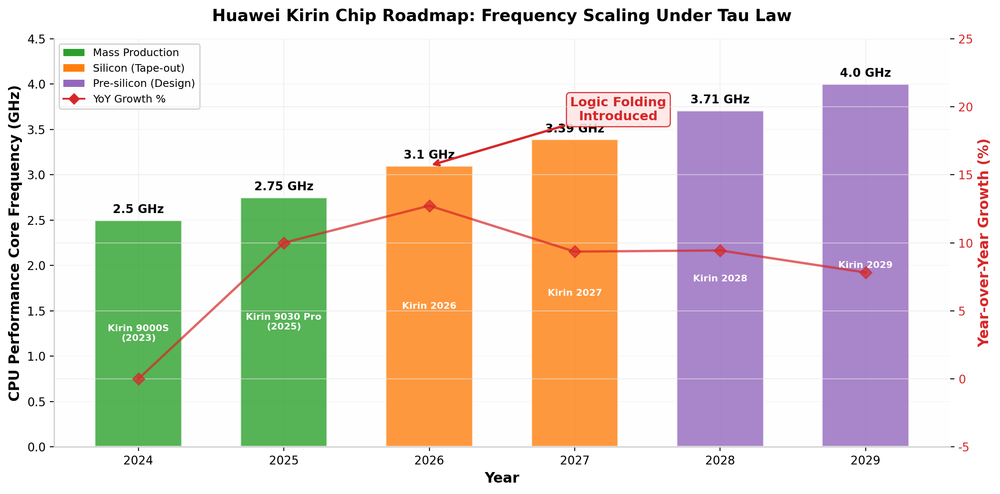
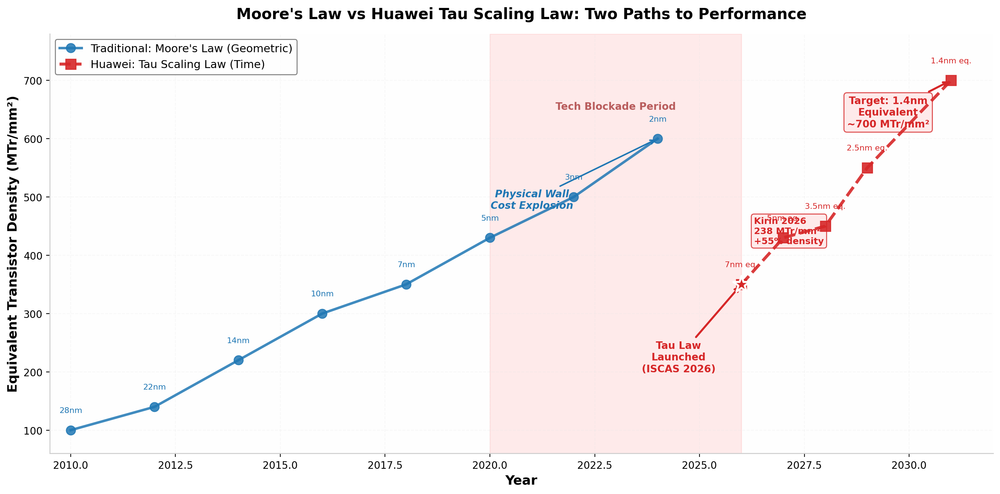
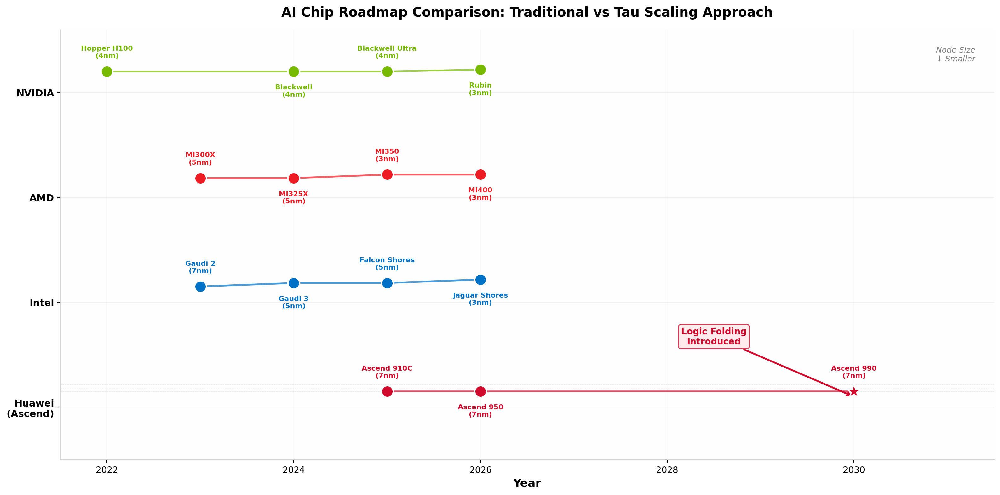
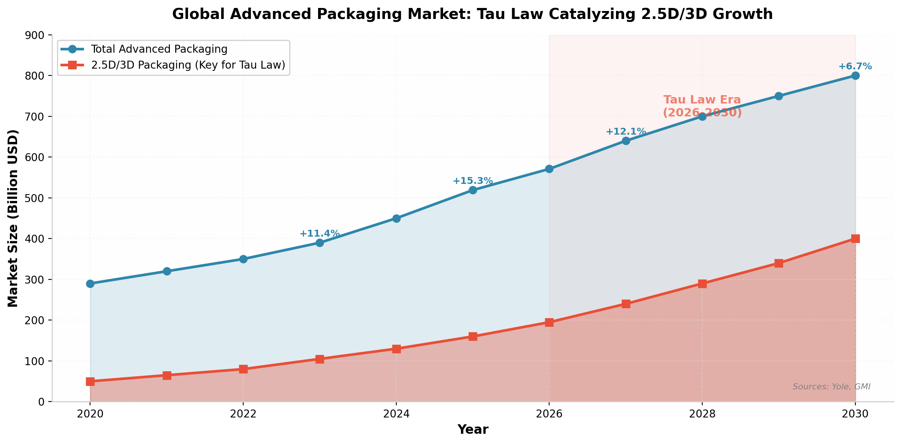
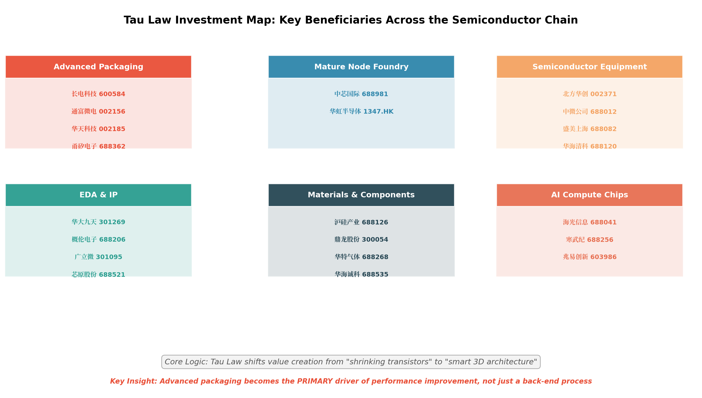

2026年5月25日，华为公司董事、半导体业务部总裁何庭波在IEEE ISCAS 2026上正式发表"韬（τ）定律"——这是中国企业首次在全球半导体领域提出产业发展指导原则。
韬定律的核心是以"时间缩微（Time Scaling）"替代传统的"几何缩微（Geometric Scaling）"， 通过系统性降低电路时间常数τ（信号传播时延），在不依赖EUV极紫外光刻机推进到更先进制程的前提下， 实现晶体管密度与系统性能的持续提升。即将于2026年秋季发布的麒麟芯片将首次完整采用"逻辑折叠"核心技术， 实现晶体管密度55%的阶跃式提升和41%的能效增益。
韬定律技术原理深度解析
半导体产业过去六十年的发展，本质上是一部几何缩微的历史。然而，这条路径正面临三重根本性瓶颈：物理极限（量子隧穿效应）、经济成本（5nm研发费用是28nm的10倍）、 以及登纳德缩放定律的终结（2005年功耗墙出现）。
| 维度 | 摩尔定律（几何缩微） | 韬定律（时间缩微） |
|---|---|---|
| 核心变量 | 晶体管物理尺寸L | 时间常数τ（RC延迟） |
| 关键手段 | EUV光刻、FinFET/GAA | 逻辑折叠、3D堆叠、系统协同 |
| 制程依赖 | 极高（EUV必需） | 可在7nm/14nm/28nm实现 |
| 成本结构 | 超高（200亿+美元/产线） | 相对较低（复用成熟产线） |
量产验证与产品路线图

全球技术路线对比

摩尔定律（蓝线）依赖几何缩微趋缓，韬定律（红线）通过时间缩微在成熟制程上实现等效密度跃升

英伟达/AMD依赖先进制程（3-4nm），华为昇腾基于7nm成熟制程+逻辑折叠走出差异化路线
| 厂商 | 旗舰产品 | 制程 | 晶体管 | 核心策略 |
|---|---|---|---|---|
| NVIDIA | Rubin (2026) | 台积电3nm | 3360亿 | 制程+架构+CUDA生态 |
| AMD | MI350 (2025) | 台积电3nm | 未披露 | Chiplet+高内存容量 |
| Intel | Jaguar Shores | Intel 3nm | 未披露 | Foveros 3D封装+代工 |
| 华为 | 昇腾990 (~2030) | 中芯国际7nm | 未披露 | 逻辑折叠+系统协同 |
产业链重构性影响

全球先进封装市场2024年达450亿美元，2.5D/3D封装年复合增速18%，韬定律成为重要催化剂
从"前道制程"转向"后道封装+系统设计"
先进封装从"配角"升级为"主角"
EDA工具从2D设计转向3D集成验证
成熟制程（7nm/14nm/28nm）价值重估
7nm产能计划2026年翻倍
三座华为专用晶圆厂加紧建设
成熟制程全球市场份额达35%（28nm）
韬定律发布日股价涨幅18.78%
产业链投资分析

风险与挑战
结论与展望
华为韬（τ）定律的发布，标志着中国半导体产业从被动跟随摩尔定律转向了主动引领系统级创新的新范式。这一转变在技术层面以"时间缩微"替代"几何缩微"， 在产业层面打破了西方在极限制程上的垄断枷锁，在全球格局层面将中国纳入半导体性能演进的"定律制定者"行列。
从投资角度看，先进封装是最直接受益者，中芯国际等成熟制程代工厂产能价值被重估，北方华创等设备厂商在3D结构加工新需求中获得增量订单，华大九天等国产EDA厂商在三维设计刚需中迎来替代机遇。 这些赛道构成了"韬定律时代"半导体投资的核心版图。